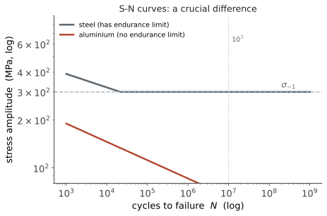

失效 I · 疲劳与断裂
层次：本科核心 + 研究生专门方向 ｜ 这是机械失效中最重要的一页。 一个广为引用的工程共识：机械零件的失效中，疲劳占绝大多数（各类统计给出的比例常在 80% 以上）。疲劳的可怕之处在于——应力远低于屈服强度，零件也会断；而且断裂前几乎没有宏观征兆。 本页讲清疲劳的机理、判据与设计对策。
一、疲劳：低应力下的累积损伤
现象：在交变应力下，即使最大应力远低于屈服强度，零件也会在若干次循环后断裂。
过程分三阶段：
- 裂纹萌生：通常在表面的应力集中处（承第一页），由局部微塑性变形产生滑移带；
- 裂纹稳定扩展：每个循环推进一点，在断口上留下疲劳辉纹（贝壳纹）；
- 瞬时断裂：剩余截面不足以承载，突然断开。
断口特征极具诊断价值：疲劳断口有光滑的扩展区（贝壳纹，可反推裂纹源与扩展方向）与粗糙的瞬断区。看断口就能判断是疲劳还是过载——这是失效分析的第一步。
二、S-N 曲线与疲劳极限

两类材料的根本差别：
- 钢与钛：存在疲劳极限 \(\sigma_{-1}\)（约为抗拉强度的 0.4–0.5）。设计在其之下，可视为无限寿命；
- 铝、镁、铜合金：无疲劳极限，任何应力水平下累积足够循环都会失效。
这解释了航空领域的一项基本制度：铝合金机身必须按安全寿命/损伤容限设计，规定检查间隔与退役寿命——因为不存在"永远安全"的应力水平。
高周疲劳 vs 低周疲劳：
- 高周疲劳（\(N>10^4\)）：应力低、以弹性变形为主，用 S-N 曲线（应力寿命法）；
- 低周疲劳（\(N<10^4\)）：每次循环都有明显塑性，用应变寿命法（Coffin–Manson 关系）。压力容器的启停、热循环属于此类。
三、影响疲劳强度的因素
材料手册给出的 \(\sigma_{-1}\) 是光滑小试样在实验室条件下的值。实际零件必须打一系列折扣：
| 因素 | 影响 |
|---|---|
| 应力集中 \(K_\sigma\) | 最重要——缺口、键槽、螺纹、台阶、焊缝 |
| 尺寸 \(\varepsilon_\sigma\) | 大件疲劳强度低（缺陷概率大、应力梯度小） |
| 表面质量 \(\beta\) | 粗糙表面显著降低疲劳强度；抛光提高 |
| 表面处理 | 喷丸、滚压、渗氮引入残余压应力 → 大幅提高疲劳寿命 |
| 平均应力 | 拉伸平均应力有害，压缩有益 |
| 腐蚀环境 | 腐蚀疲劳无疲劳极限，寿命大幅下降 |
残余压应力是提高疲劳寿命最有效、最经济的手段之一：喷丸处理可使弹簧、齿轮、曲轴的疲劳寿命提高数倍。原理是抵消部分外加拉应力——因为疲劳裂纹只在拉应力下张开扩展。
平均应力的处理：用 Goodman 图或 Soderberg 直线把非对称循环折算为等效对称循环。
四、变幅载荷与损伤累积
真实载荷不是等幅正弦。Miner 线性累积损伤准则：
它的局限必须知道：
- 忽略载荷顺序效应（先大后小与先小后大的实际寿命不同——大载荷会产生裂纹尖端残余压应力而延缓后续扩展）；
- 实测的临界 \(D\) 值分散很大（0.3–3 都出现过）；
- 工程上常取 \(D \le 0.3\)–\(0.7\) 作为保守判据。
载荷谱的获取：实测应变 → 雨流计数法把随机载荷分解为一系列循环 → 代入 Miner 累加。雨流计数是疲劳分析的标准前处理，汽车、工程机械的耐久性开发都建立在实测载荷谱上。
五、断裂力学：带裂纹的结构还能用吗
传统强度设计假设材料无缺陷。断裂力学承认裂纹存在，问：多大的裂纹是危险的？
应力强度因子：
\(a\) 为裂纹尺寸，\(Y\) 为几何因子。失效判据：
由此得到临界裂纹尺寸：
这个式子是"损伤容限设计"的基础——它把"能容忍多大裂纹"变成可计算的量，从而可以规定无损检测的灵敏度要求与检查周期。
裂纹扩展速率（Paris 律）：
积分可得剩余寿命——飞机、压力容器、桥梁的检修间隔正是这样确定的。
一个重要的材料权衡：强度与断裂韧性通常反向变化。高强度钢的 \(K_{IC}\) 往往较低 → 临界裂纹尺寸小 → 对缺陷更敏感。所以"用更高强度的材料"在含缺陷结构中可能反而更危险——这与第四页"高强钢不防屈曲"是同类的反直觉结论。
六、设计对策清单
按有效性排序（这是本页最实用的产出）：
- 消除应力集中：加大圆角、平滑过渡、卸载槽、把开孔移到低应力区——成本最低、收益最大；
- 改善表面：降低粗糙度、避免加工刀痕（尤其横向刀痕）；
- 引入残余压应力：喷丸、滚压、渗氮；
- 降低应力幅：加大截面（注意也会加大尺寸效应）；
- 选材：注意强度与韧性的权衡；
- 结构上防止裂纹贯通：止裂设计（多路径传力、加止裂筋）；
- 可检测性设计：让关键部位能被检查到——损伤容限哲学的核心。
焊接结构要特别注意：焊缝有残余拉应力、几何突变、以及内部缺陷，焊趾是典型的疲劳起源。焊接结构的疲劳设计有专门的等级体系（按接头形式分级），且打磨焊趾、TIG 重熔可显著提高寿命。
七、要点
- 疲劳是机械失效的主因，且发生在远低于屈服强度处；断口特征可用于诊断；
- 钢有疲劳极限，铝没有——后者必须按有限寿命 + 定期检查设计；
- 应力集中是最重要的影响因素；残余压应力（喷丸）是最经济的强化手段；
- Miner 准则忽略顺序效应，工程上取保守的临界损伤值；雨流计数是标准前处理；
- 断裂力学给出临界裂纹尺寸与剩余寿命，是损伤容限与检修周期的依据；
- 强度与断裂韧性反向——高强材料对缺陷更敏感。
下一页：公差与配合。图纸上多写一位小数，成本可能翻倍——这一页讲设计与制造之间的正式契约。